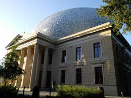
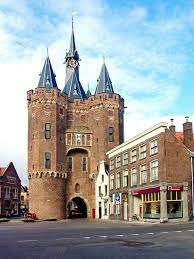
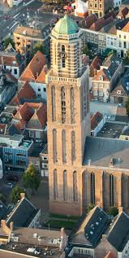
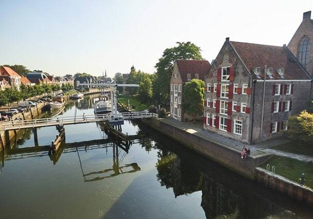
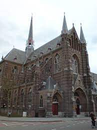

Je bent er waarschijnlijk al vaak genoeg doorheen gelopen, de straat ligt namelijk naast het Academiehuis als je richting de Nieuwe Havenbrug loopt. Een leuk weetje over deze straat is dat Lutteke staat voor klein, deze straat was namelijk vroeger niet er groot en kleiner dan je hem nu kent.
Zwolle is een echte handelsstad en dat blijven we ook zien in de markten die te vinden zijn in Zwolle. Je zult waarschijnlijk de Grote markt in Zwolle kennen, waar we iedere week de leukste en lekkerste marktkraampjes kunnen vinden. Maar welke weet jij nog meer te vinden in Zwolle? Naast de Grote markt zijn er nog zeven andere markten te vinden in Zwolle. Denk aan de Melkmarkt, Oude Vismarkt, Nieuwe Markt, Blijmarkt, Ossenmarkt, Turfmarkt en de Veemarkt.
Momenteel zijn er diverse snackbars te vinden in Zwolle. Maar de eerste snackbar die zijn zaak opende is de Norp, dit is begonnen als banketbakkerij en laten overgegaan in een snackbar. Je kunt natuurlijk ook naar restaurant Zwolle die je bijvoorbeeld op de Grote markt kan vinden zoals Blij Zwolle.
Met ruim 124.000 inwoners is Hanzestad Zwolle de hoofdstad van de provincie Overijssel. Het stadsgebied ligt aan het Zwarte Water en de Overijsselse Vecht. Daarnaast is het dankzij het Zwolle-IJsselkanaal ook nog eens verbonden met de IJssel. Zwolle is de tweede stad van de provincie. Zowel nationaal als internationaal draagt deze gemeente de titel van groenste gemeente van Nederland. In 2006 werd Zwolle zelfs verkozen tot groenste stad van Europa.
Vooral in de 15e eeuw was Zwolle een welvarende en machtige stad. Dat kwam door de gunstige ligging van de stad aan bestaande handelsroutes. In de historische binnenstad van Zwolle zijn nog veel sporen te vinden uit haar roemrijke verleden als Hanzestad maar ook de ondernemersgeest; het elkaar gunnen is nog steeds in het DNA van de Zwollenaar te vinden
Dit belangrijkste kunstmuseum van de stad prijkt bovenaan iedere lijst met bezienswaardigheden in Zwolle. Hier vind je een aanzienlijke collectie beeldende kunst, waarbij grote namen zoals Picasso, Van Gogh en Mondriaan geen uitzondering zijn.
Eén van de mooiste monumenten in Zwolle is de Sassenpoort, die als enige van de acht stadspoorten volledig bewaard is gebleven. Deze poorten werden gebruikt om de stad te verdedigen.
Voor het mooiste uitzicht over de hele stad moet je bij de Onze Lieve Vrouwetoren zijn, die bekend staat als ‘De Peperbus’. Als de basiliek open is, kun je de toren beklimmen.
Zwolle heeft een stervormige gracht, waar je fijn langs kunt wandelen. Een paar aanraders voor tijdens je wandeling zijn het park bij de Potgietersingel en de Thorbeckegracht.
Net buiten de grachten die rond het historische centrum liggen, staat een enorme kerk dat onderdeel is van het Dominicanenklooster. Dankzij de enorme hoogte is het een imponerend gebouw.
